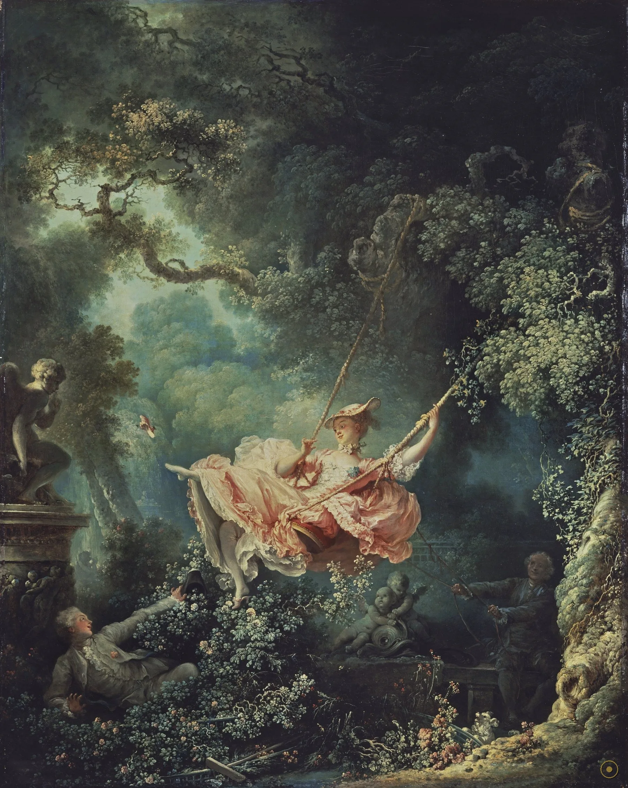
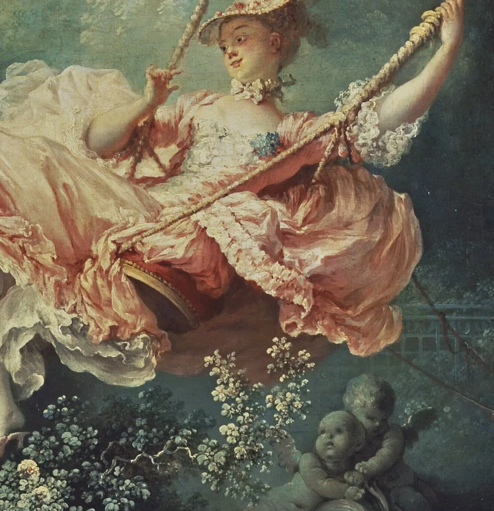
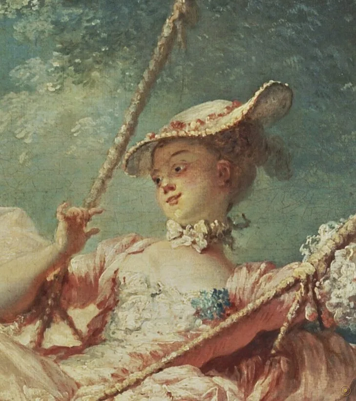
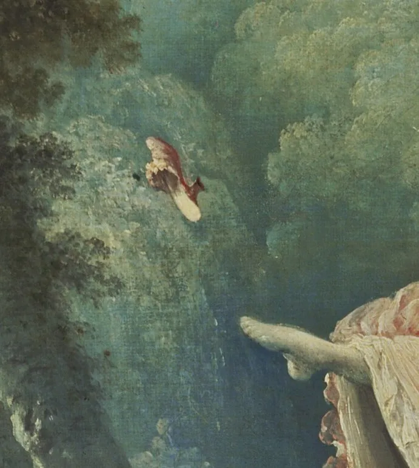
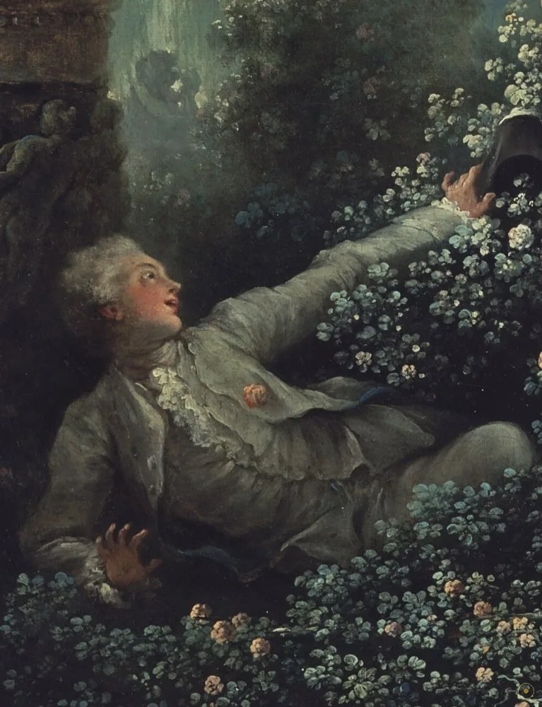
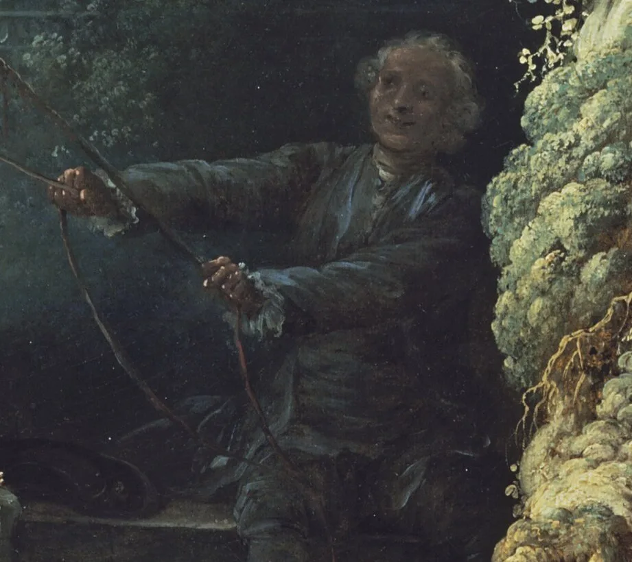
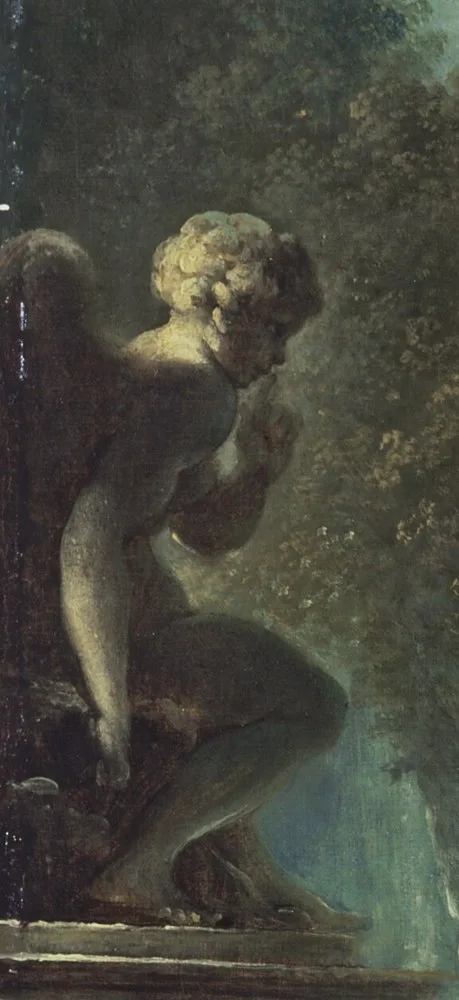
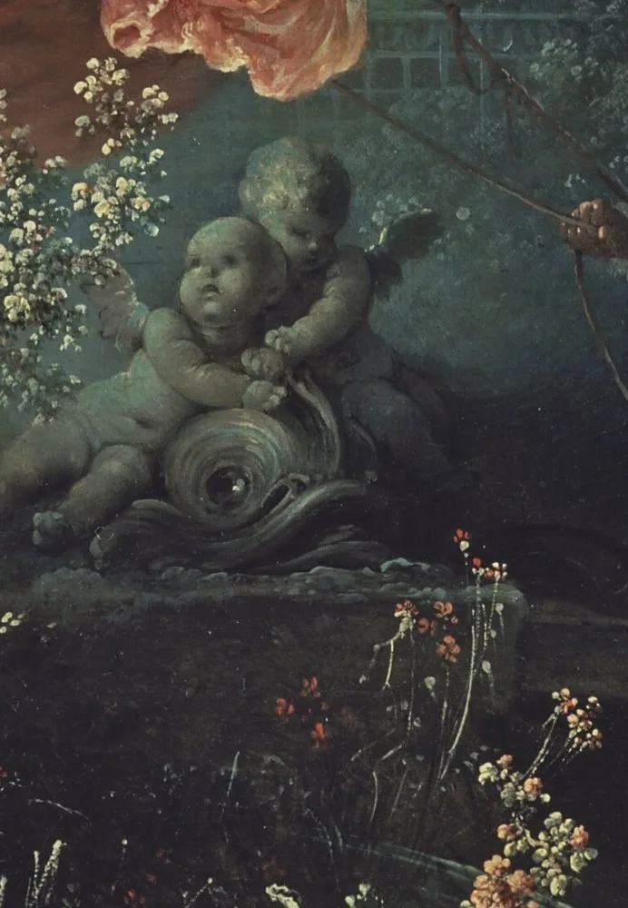
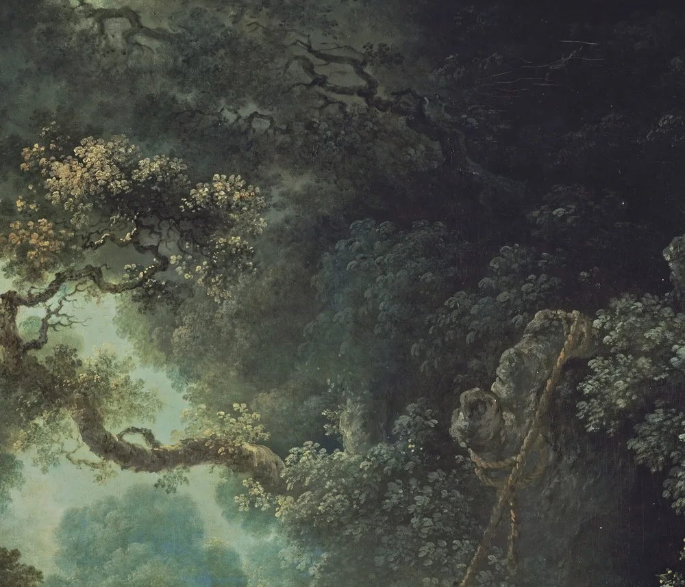

本页面展示的画作包含 艺术人体 / 裸体 内容。所录作品均为美术馆级公有领域馆藏，仅作艺术欣赏与学习之用，不含任何低俗或违规意图。
若您未满 18 周岁，或对此类内容感到不适，请点击「返回画廊」。点击「进入欣赏」即表示您已知悉上述说明，并同意仅作艺术欣赏之用。
「我要您画一位夫人坐在秋千上，由一位主教推着；再把我放在能看清那位可爱姑娘双腿的位置上——要是您想让画面再刺激一点的话。」
这句话出自一次真实的委托。据剧作家夏尔·科莱 1767 年 10 月的日记，一位宫廷男子（通常被认为是时任法国教士总收税官的圣朱利安男爵）想请人画他与情妇的画像，指名要一位主教来推秋千。被找上的历史画家多扬觉得题材太轻浮，拒绝了，把差事转给了比自己年轻、为乐趣而作画的弗拉戈纳尔。弗拉戈纳尔接下了，然后悄悄做了一件事：把主教换成了一个泛指的老年绅士。
于是有了 18 世纪最著名的一幅画。表面上它轻快得没有重量——绿叶、粉裙、秋千飞起、一只鞋脱脚而出；骨子里却结构严密：谁在推、谁在看、谁被蒙在鼓里，被安排得分毫不差。委托人想要的那点私密刺激，被画家处理成了一场既可解、又可否认的视觉游戏：足够刺激，也足够『无辜』。
这一页不把它当成一幅情色画来看。我们按弗拉戈纳尔布置的顺序走一圈：从树冠漏下的光，到左下灌木里的那个人，再到最角落那把没人管的耙子。看完你会发现，画题里那个『幸运的意外』，其实一点也不偶然。
—— 圣朱利安男爵委托多扬时所说，见夏尔·科莱 1767 年 10 月日记（据英译转译，措辞或因译本而异）
在本页左下角，可以点亮一首与这幅画同代的法国羽管键琴曲。
从上方漏光到最底部的耙子：每个人（和每座石像）都朝不同的方向看着，而且知道的事各不相同。

点击画面中的 ✦ 光点 查看画面细节 · 图片来源：Wikimedia Commons（公有领域）
它开头是一场被拒绝的订单，中途经过一次断头台与一场拍卖，最后被挂在伦敦、被全世界复制。
约 1767 · 巴黎
据剧作家夏尔·科莱 1767 年 10 月的日记，一位宫廷男子——通常被认为是时任法国教士总收税官的圣朱利安男爵——先找到历史画家多扬，要画他与情妇的秋千像，还指名要一位主教来推。多扬觉得题材太轻浮，拒绝了，把差事转给比自己年轻、『为乐趣而作画』的弗拉戈纳尔。弗拉戈纳尔接下订单，悄悄把主教换成泛指的老年绅士，其余照单完成。委托人想要的那点私密刺激，被画家处理成了一场既可解、又可否认的视觉游戏——于是就有了这幅 18 世纪最著名的画。
➤1794 → 1865 · 从断头台到拍卖场
此画最早的归属不明，可靠的递藏从税务官梅纳日·德·普雷西尼开始——他 1794 年在法国大革命中被送上断头台，画作随之被革命政府查抄。此后它经德·圣马克侯爵（可能）、莫尔尼公爵（确定）之手；莫尔尼 1859 年曾想把它献给卢浮宫而未果。1865 年莫尔尼去世，这幅画在巴黎拍卖（Pillet & Escribe 专场，第 98 号），被英国收藏家、赫特福德侯爵四世以 30,200 法郎买下，从此渡海入英，成为华莱士收藏最重要的底子之一。
➤1782 → 今天 · 从版画到流行图腾
1782 年，版画家尼古拉·德·洛奈把《秋千》刻成铜版画——此后它的图像开始在上流社会流传，成了洛可可『享乐主义』的招牌。进入 20 世纪，它被反复挪用：美国诗人威廉·卡洛斯·威廉姆斯 1920 年的诗、Little Feat 乐队 1972 年的专辑封面、艺术家因卡·绍尼巴雷 2001 年那件『无头』再创作（获特纳奖提名）、迪士尼《冰雪奇缘》(2013) 中安娜穿过的画廊场景、以及 Red Velvet 2022 年的 MV……一幅 18 世纪的花园秋千，成了当代流行文化取之不尽的取景框。

真事一 · 它的委托，有同时代人的『目击证词』。与多数来历成谜的名画不同，《秋千》的起点被记了下来：剧作家科莱在 1767 年 10 月的日记里转述了画家多扬的讲述——一位宫廷男子要画他与情妇，指定主教推秋千、自己则要一个『能看清她双腿』的位置；多扬拒绝并转单给弗拉戈纳尔，后者把主教换成了老年绅士。这份证词出自同时代人之手，是这幅画最珍贵也最罕见的一手背景。
真事二 · 它有一百多年没被清洁过。2021 年 8 月至 11 月，《秋千》在华莱士收藏馆接受了一次谨慎的修复：上一次彻底清理已是一百多年前，画面被严重黄化的清漆蒙住，旧日的补笔也开始显形。因为它太重要、几乎从不下架，这次修复本身成了一件新闻——人们第一次看到洗去积垢后，那身粉裙与玫瑰丛原本的颜色。修复并不激进，只求还原自然老化被遮住的部分。
真事三 · 它进英国，是从一场法国拍卖会上买走的。1865 年莫尔尼公爵去世，其收藏在巴黎公开拍卖（5 月 31 日至 6 月 12 日，Pillet & Escribe 专场），《秋千》是第 98 号拍品，被第四代赫特福德侯爵以 30,200 法郎竞得。侯爵 1870 年去世后，藏品传给其子理查德·华莱士爵士；1897 年华莱士夫人遵遗愿把整批收藏捐给英国，条件是不拆分、留驻伦敦赫特福德宅。1900 年 6 月华莱士收藏馆开馆，《秋千》自此公开展出至今。
※ 委托人之身份（圣朱利安男爵说）、年长男子是否为『丈夫』、以及部分象征解读，均为学界通行假说或据文献转述，存在争议；引文据英译转译。
把画面拆开看：每个人——和每座石像——都在看别人，但方向不同、知道的事也不同。

18 世纪流行的草帽。戴上它，连贵族女子也扮一会儿牧羊女。
裙上的粉与玫瑰丛同色——他用一支颜料，把人和花园缝在一起。

18 世纪里，掉了鞋的脚即裸露与失贞的委婉说法，他偏画得最细。

委托人要的『看清她的位置』，就藏在这丛玫瑰里。

他供给动力，却在暗处，看不见真正的交流。

石像把手抬到唇边，替这场幽会守口如瓶。

两个小爱神抬头观望——不是共谋，更像担心。

树冠让开一个口，光恰好落在她荡起的那片裙上。
洛可可最擅长的事，是把享乐画成一门需要动脑的游戏。《秋千》表面轻快，骨子里却结构严密：茂密的叶子像舞台幕布收拢视线，光只开给一个人，三组人物的注视方向被精确错开。研究洛可可的学者詹妮弗·米拉姆（Jennifer Milam）把它称作『视觉游戏』——看画的人被鼓励去发现画面里层层叠叠的双关、符号与巧合，像荡秋千一样在细节之间来回。它不要求你感动，只邀请你会心一笑。
这幅画最锋利的，不是情色，而是它对『看与被看』的安排。委托人要一个能看清情妇的位置，画家就给了他这个位置，同时让另一个人（拉绳的老者）供给动力、却身处盲区。谁看得见、谁被看见、谁蒙在鼓里——不是自然发生，而是被社会位置决定的。画题叫做『秋千的幸运意外』，可整幅画恰恰在告诉你：这场偶然，是被精确计算过的秩序。这也是它两百年后仍被反复解读的原因。
18 世纪下半叶，这类『轻浮』绘画很快成了启蒙哲人批评的对象——他们主张艺术应当严肃，去呈现人性的崇高与道德的份量，而不是画一群人荡秋千、丢鞋子。正是这种针锋相对，让《秋千》成了洛可可的一个临界点：它是这一趣味最完美的样本，也是它被时代抛弃的证据。被批评，反而把它钉进了艺术史的坐标。
《秋千》大半生挂在私人的宅邸与收藏里：先是革命前一位税务官的家，后经侯爵、公爵，最终随赫特福德勋爵渡海入英。1897 年华莱士夫人把它连同整批收藏捐给英国，1900 年华莱士收藏馆开馆，它才真正向公众敞开。此后它的图像开始四处旅行：诗、唱片封面、当代艺术、动画与流行 MV——一个被藏在暗处的私密玩笑，最终成了人人都见过的那张脸。
受一份有记录的委托绘于巴黎；把主教换成老年绅士，其余照单完成。
首任可考的收藏者、税务官梅纳日·德·普雷西尼在法国大革命中被处死，画作遭查抄。
莫尔尼公爵藏画在巴黎拍卖，赫特福德侯爵四世以 30,200 法郎购入，画作渡海入英。
华莱士收藏馆在伦敦赫特福德宅开馆，《秋千》公开展出至今（馆藏编号 P430）。
罕见修复：洗去蒙了一百多年的黄化清漆，粉裙与玫瑰重见本色。